1016C11 single cylinder head-r r gasket for versions with air conditioner
- Path
- Procedures > 10 ENGINE > 1016 CYLINDER HEAD(S) > 1016C cylinder head - remove + re-fit > 1016C11 single cylinder head-r r gasket for versions with air conditioner
- Kind
- repair procedure (removal / refitting; the operation number is the code)
- Applies to
- all engines; all production periods
- Interactive page
- https://sloeber94.github.io/elrnDB-fDbl/en/#/2584168
Applies to: all engines; all production periods
 Removing
Removing
 Refitting
RefittingPlace the car on a ramp.
7055B54 under-engine guard - r r
5530B52 Battery DRIP TRAY/SUPPORT - R.R.
1048A10 air cleaner filtering element - replace
Fit a suitable container for coolant recovery.
1. Disconnect the upper radiator pipe from the thermostat.
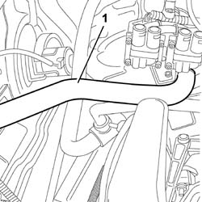
Applies to: all engines; all production periods
1. Lift up the spring (1a), release the cable from the fastening (1b) on the butterfly control device and from the bracket (1c), then place the accelerator control cable (1d) to the side.
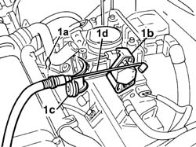
Applies to: all engines; all production periods
1. Disconnect the electrical connection for the engine rpm sensor.
 | Name | Connector |
|---|---|---|
1 | RPM sensor | K46 |
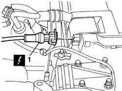
Applies to: all engines; all production periods
1. Disconnect the electrical connection from the throttle position sensor.
| Name | Connector |
|---|---|---|
1 | Throttle position sensor | K56 |
2. Disconnect the idle speed actuator electrical connector.
| Name | Connector |
|---|---|---|
2 | Idle actuator | N74 |
3. Undo retaining bolt (3a) and disconnect the earth on throttle body (3b).
| Name | Connector |
|---|---|---|
3b | Earth on engine | C60 |
4. Disconnect the intake air temperature/pressure sensor.
| Name | Connector |
|---|---|---|
4 | Integrated air temperature sensor | K43 |
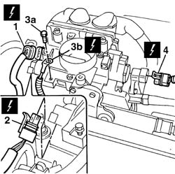
Applies to: all engines; all production periods
1. Operate retaining levers (1a) to disconnect the electrical connectors from injection control unit (1b).
| Name | Connector |
|---|---|---|
1b | Engine management ECU | M10 |
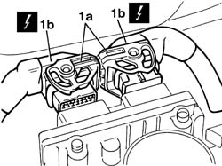
Applies to: all engines; all production periods
1. Undo retaining clip (1a) and disconnect injector wiring duct pipe (1b) from slots (1c) on the cam cover.
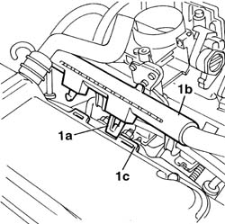
Applies to: all engines; all production periods
1. Disconnect the electrical supply connection for the ignition coils.
| Name | Connector |
|---|---|---|
1 | Ignition 'coil | A30 |
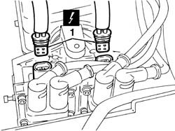
Applies to: all engines; all production periods
1. Disconnect the electrical connection from the engine coolant temperature sensor.
| Name | Connector |
|---|---|---|
1 | Coolant temperature sender unit | K45 |
2. Undo the bolts (2a) fixing the plastic filler (2b), then move it away from the fastening on the intake manifold, complete with coolant hose (2c).
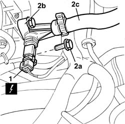
Applies to: all engines; all production periods
1. Disconnect the engine oil vapour recovery pipe from the cam cover.
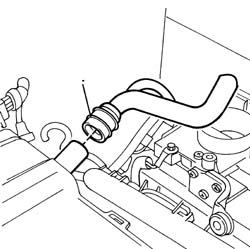
Applies to: all engines; all production periods
1. Disconnect the timing sensor electrical connection from the cam cover.
| Name | Connector |
|---|---|---|
- | Timing sensor | K47 |
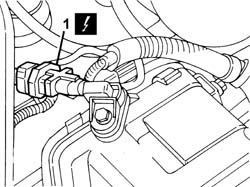
Applies to: all engines; all production periods
1. Disconnect the electrical connections from the injectors (1a) and place wiring duct (1b) to one side.
| Name | Connector |
|---|---|---|
1a | Injector | N70 |
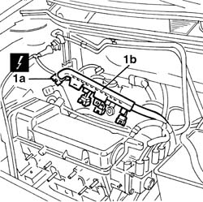
Applies to: all engines; all production periods
1. Remove cap (1a) protecting breather valve of fuel manifold (1b) and use tool (1c) to release fuel pressure.
Collect the fuel in a suitable container.
 | Name | Country |
|---|---|---|
1c | Rapid connector | 1.870.684.000 |
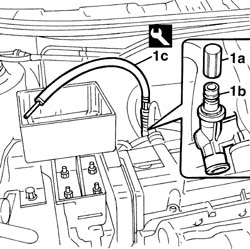
Applies to: all engines; all production periods
1. Disconnect the rapid attachment for the fuel supply pipe.
2. Disconnect the electrical connection from the fuel vapour inlet enablement solenoid valve.
| Name | Connector |
|---|---|---|
2 | Fuel vapour recovery solenoid | L10 |
3. Disconnect the evaporation control system pipe.
4. Disconnect the brake servo vacuum pipe.
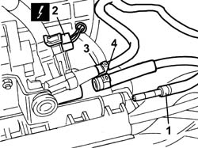
Applies to: all engines; all production periods
1. Undo the fixing nuts (1a), open retaining collar (1b) and remove the wiring duct bracket (1c).
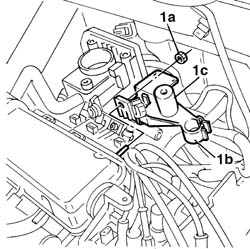
Applies to: all engines; all production periods
1. Undo the retaining bolts and nut.
2. Disconnect the spark plug high tension leads.
3. Remove the camshaft/coil assembly mount complete with spark plug high tension leads.
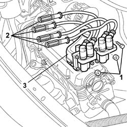
Applies to: all engines; all production periods
Remove the injector electrical wiring from the clips behind the intake manifold.
1. Undo the nuts (1a) and remove the inlet manifold with throttle body (1b).
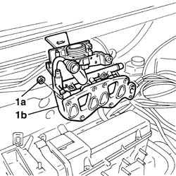
Applies to: all engines; all production periods
1. Undo the bolts (1a) and remove the cam cover (1b).
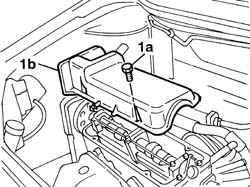
Applies to: all engines; all production periods
1072C44 exhaust manifold heat shield on bulkhead - r+r
1. Undo the nuts fixing the exhaust manifold to the cylinder head.
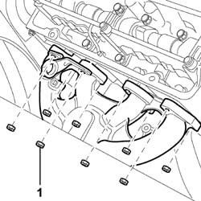
Applies to: all engines; all production periods
1032D12 timing system protective cover(s) - r + r
Raise the vehicle.
1. Undo the bolt securing the exhaust manifold retaining bracket.
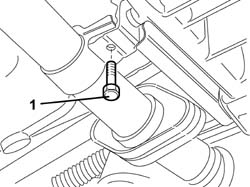
Applies to: all engines; all production periods
(Timing gear side)
1092B68 belt from a/c compressor to alternator drive r + r
7055B64 Engine compartment DUST shield in front wheel arch (one), left or right - R.R.
1092C11 power steering pump drive belt - r r for versions with air conditioner
1092D10 air conditioner compressor drive belt - r + r
1092A12 crankshaft pulley - r+r for versions with air conditioner
1. Undo the bolts (1a) and remove the single cylinder head (1b).
2. Remove the underlying gasket .
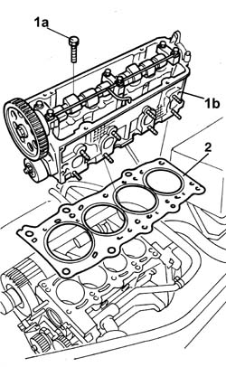
Applies to: all engines; all production periods
Refitting
RemovingClean the cylinder head and crankcase contact surfaces.
Position the cylinder head gasket with the word 'ALTO' [TOP] visible to the fitter.
ASTADUR type cylinder head gaskets are fitted.
The material from which these gaskets are made undergoes a polymerisation process during the operation of the engine so that they become considerably harder during usage.
To ensure the polymerisation process takes place, keep the gasket sealed in its plastic bag and do not take out until ready to fit. Do not lubricate the gasket or contaminate with oil.
1. Position cylinder head (1a) and tighten retaining bolts (1b) to a preliminary torque of 2 daNm, and then to torque following the tightening order and values shown.
 | Fastening | Component | Ø | Value (daNm) |
|---|---|---|---|---|
1b | Bolt | CYLINDER HEAD | M9 x 1.25 | 3 + 90° + 90° |
2. Following the same tightening order, finish with angular tightening of the bolts using the suitable tool.
| Name | Country |
|---|---|---|
2 | Protractor | 1.860.942.000 |
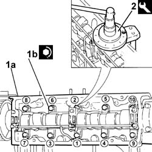
Applies to: all engines; all production periods
1092A12 crankshaft pulley - r+r for versions with air conditioner
1092D10 air conditioner compressor drive belt - r + r
1092C11 power steering pump drive belt - r r for versions with air conditioner
7055B64 Engine compartment DUST shield in front wheel arch (one), left or right - R.R.
1092B68 belt from a/c compressor to alternator drive r + r
(Timing gear side)
Tighten the exhaust manifold bracket bolt to torque.
| Fastening | Component | Ø | Value (daNm) |
|---|---|---|---|---|
- | Bolt | CATALYTIC CONVERTER (ONE) | M8 | (Collar at gearbox) 2.8 |
Lower the vehicle.
1032D12 timing system protective cover(s) - r + r
Tighten the nuts securing the exhaust manifold to the cylinder head to the recommended torque.
| Fastening | Component | Ø | Value (daNm) |
|---|---|---|---|---|
- | Nut | CATALYTIC CONVERTER (ONE) | M8 | (Manifold to cylinder head) 3 |
1072C44 exhaust manifold heat shield on bulkhead - r+r
Fit the cam cover and tighten the bolts to torque.
| Fastening | Component | Ø | Value (daNm) |
|---|---|---|---|---|
- | Bolt | CAM COVER | M6 | 1 |
Fit the inlet manifold and fix it tightening the nuts to the recommended torque.
| Fastening | Component | Ø | Value (daNm) |
|---|---|---|---|---|
- | Nut | INLET MANIFOLD | M18 x 1.25 | 2.7 |
Fit the ignition coil mount assembly and tighten the retaining bolts and nut to the specified torque.
Connect the high tension leads to the spark plugs.
Position the duct pipe bracket and tighten the retaining nuts.
Connect the rapid attachment for the fuel supply pipe.
Connect the fuel vapour flow enablement solenoid electrical connection.
| Name | Connector |
|---|---|---|
- | Fuel vapour recovery solenoid | L10 |
Connect the evaporation control system pipe.
Connect the brake servo vacuum pipe.
Position the duct pipe and connect the injector electrical connections.
| Name | Connector |
|---|---|---|
- | Injector | N70 |
Connect the timing sensor electrical connection.
| Name | Connector |
|---|---|---|
- | Timing sensor | K47 |
Connect the engine oil vapour recovery pipe to the tappets cover.
Fit the plastic filler, complete with coolant hose.
Secure the filler to the intake manifold and tighten the fixing bolts.
Connect the electrical connection to the engine coolant temperature sensor.
| Name | Connector |
|---|---|---|
- | Coolant temperature sender unit | K45 |
Connect the ignition coil electrical supply connectors.
| Name | Connector |
|---|---|---|
- | Ignition 'coil | A30 |
Connect the electrical connections to the injection control unit.
| Name | Connector |
|---|---|---|
- | Engine management ECU | M10 |
Connect the electrical connection to the throttle position sensor.
| Name | Connector |
|---|---|---|
- | Throttle position sensor | K56 |
Connect the idle speed actuator electrical connector.
| Name | Connector |
|---|---|---|
- | Idle actuator | N74 |
Connect the earth to the throttle body and secure with the retaining bolt.
| Name | Connector |
|---|---|---|
- | Earth on engine | C60 |
Connect the intake air temperature/pressure sensor.
| Name | Connector |
|---|---|---|
- | Integrated air temperature sensor | K43 |
Connect the electrical connection for the engine rpm sensor.
| Name | Connector |
|---|---|---|
- | RPM sensor | K46 |
Reposition the accelerator cable on the mounting bracket and fit it on the butterfly valve.
Connect the upper radiator hose to the thermostat.
1048A10 air cleaner filtering element - replace
5530B52 Battery DRIP TRAY/SUPPORT - R.R.
1068A10 accelerator control cable - r + r
1088A30 ENGINE COOLING SYSTEM - draining and refilling circuit and bleeding air
7055B54 under-engine guard - r r
Remove the vehicle from the ramp.
Topics linked from this page (14)
- 1032B14 toothed timing belt - r + r for timing adjustment or replacement versions with air conditioner
- 1032D12 timing system protective cover(s) - r + r
- 1048A10 air cleaner filtering element - replace
- 1068A10 accelerator control cable - r + r
- 1072C44 exhaust manifold heat shield on bulkhead - r+r
- 1088A30 ENGINE COOLING SYSTEM - draining and refilling circuit and bleeding air
- 1092A12 crankshaft pulley - r+r for versions with air conditioner
- 1092B68 belt from a/c compressor to alternator drive r + r
- 1092C11 power steering pump drive belt - r r for versions with air conditioner
- 1092D10 air conditioner compressor drive belt - r + r
- 5530B10 battery - r+r
- 5530B52 Battery DRIP TRAY/SUPPORT - R.R.
- 7055B54 under-engine guard - r r
- 7055B64 Engine compartment DUST shield in front wheel arch (one), left or right - R.R.
Topics that link to this page (8)
- D05 ENGINE DOES NOT PRODUCE BEST PERFORMANCE
- D36 ENGINE COOLANT OVERHEATING SIGNALLED BY THE INSTRUMENT / WITH VISIBLE VAPOUR VENTING
- D37 ENGINE COOLANT OVERHEATING SIGNALLED BY THE INSTRUMENT / WITHOUT VISIBLE VAPOUR VENTING
- W05 WHITE EXHAUST FUMES
- X05 EXCESSIVE OIL CONSUMPTION
- X08 ENGINE COOLANT CONSUMPTION
- X10 ENGINE COOLANT LEAKS
- 1028H21 piston with connecting rod - r r